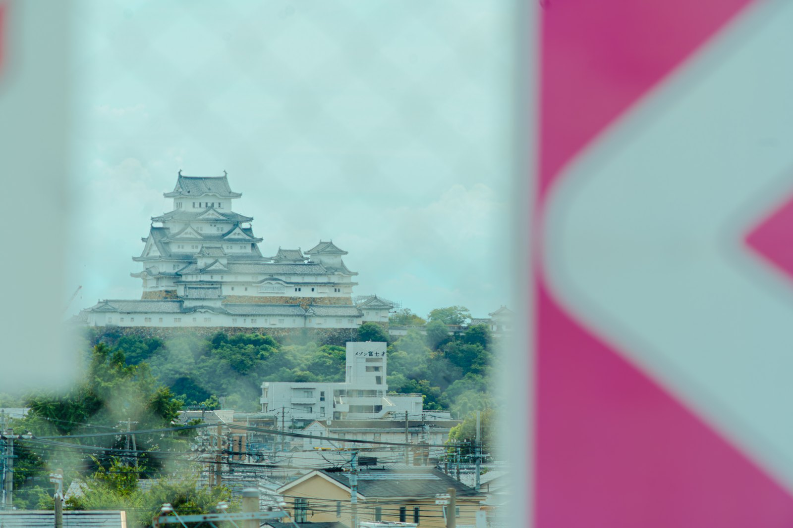

最新の断章
見送りの焼鵝と、七十ドルの妙な見栄
日本へ戻る前に、太子の棋子燒鵝で最後の一皿を。下午茶の三十五ドルを横目に、七十ドルの焼鵝と叉燒を選んだ。安いほうにしなかったのは、少しの見栄か、しばらく食べられない味への名残惜しさか。
Himeji, Hong Kong, Travel and Cameras
姫路城の撮影ガイド 36 景 ・ 香港で暮らす実務ハンドブック ・ 旅とカメラの記録
姫路城と香港。長く自分を育ててくれた二つの場所への感謝を軸に、ミャンマーからヨーロッパまで——15年分の旅で出会った光と笑顔を、写真と言葉で残しています。
香港の暮らし・手続きはこちら 香港ハンドブック →
Now in Himeji
姫路城を借景に、薪能、大名行列、千姫輿入れ行列、総踊りが行われる3日間。白鷺三十六景とあわせて、祭りのなかの姫路城の表情も追いかけます。
5月23日・24日は姫路城周辺で交通規制が予定されています。公共交通機関の利用がおすすめです。会場内でのドローン使用など危険な行為は禁止されています。
Recent updates
最新の断章
日本へ戻る前に、太子の棋子燒鵝で最後の一皿を。下午茶の三十五ドルを横目に、七十ドルの焼鵝と叉燒を選んだ。安いほうにしなかったのは、少しの見栄か、しばらく食べられない味への名残惜しさか。

Hong Kong Handbook
回郷証の取り方から、銀行口座・送金、SIMまで。香港在住30年の実務をそのまま記録した、暮らしと出入りの手引き。
制度は変わるもの。「ここが変わったよ」の最新情報コメントを歓迎します（匿名OK・承認制）。
ハンドブックを開く →